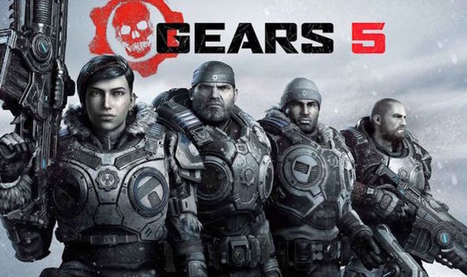

Video Games
I enjoy playing video games whenever I have free time. It is one of the things that I use to destress. The game that I use mostly to destress is Gears 5.
It is not the easiest game to get use to playing. After playing the series for a long time, I really enjoy it. It takes a lomg time to adjust to the small things that make it unique. The game feels sluggish, but it is meant to be that way and that is what sets it apart from other games.
Movies
Movies are important to me because as a kid they use to teach my things in addition to the things that I would learn in school. They were important to giving me an exapanded vocabulary and helping me decide the different between right and wrong.
As a kid, I grew up watching Star Wars and to this day I will watch these movies and still enjoy them. They have their flaws and and as an adult I can see them, but these movies will always be important to me whether some of the are not as good as others.